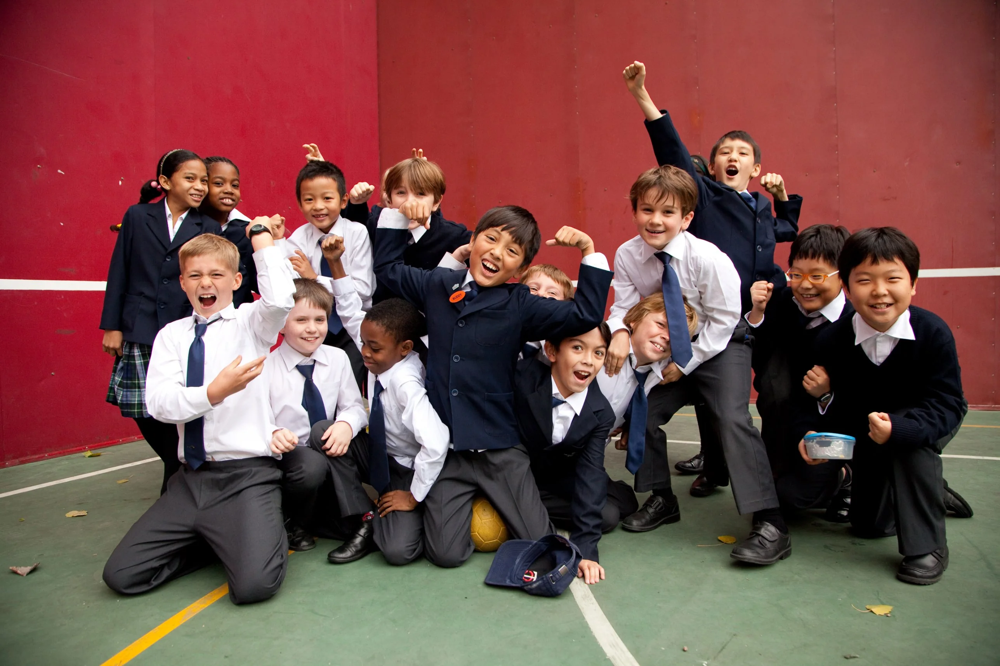

I’ve spent more than a decade on the creative front line of international schools. I’ve been in their corridors before the first bell, in their science labs and music rooms, on their playing fields in the last light of the afternoon. Through more campaigns and countries than I can count, I’ve come to an uncomfortable truth that most school marketing quietly avoids: good international schools have far more in common than they would have you think.
What makes the battle for differentiation even harder is that when you take a closer look at how most international schools position themselves, you would probably find that you could swap one school’s mission statement or brand pyramid for a competitor’s overnight, and nobody would even notice.
I decided to put this to the test.
An experiment in subtraction
I used Claude to gather the websites of 100 international schools and school groups with no connection to each other: 40 in Europe, 20 in the Middle East, 20 in Asia, 12 in the Americas and 8 in Africa; IB, British and American curricula; small independents and large groups. It analyzed the words each school uses to describe who it is (mission, values, “why choose us”) the way a busy parent takes them in, paying attention not just to how often a word appears, but to how prominently it’s used.
Next came the subtraction. We set aside the superlatives, the words every institution reaches for when it wants to sound impressive: excellent, world-class, outstanding, exceptional, leading. These words aren’t lies. Most of the schools using them are, in fact, very good. But they carry no real information. A parent can’t learn anything about a school from being told it is exceptional, because every school they are considering says the same. And nearly every one does: 96 of the 100 sites used at least one superlative, and “excellence” alone appeared on 84.
Once the superlatives are gone, in theory, what remains should be each school’s real self-description, the words it has chosen to define its true character. If schools were as different as their marketing suggests, surely this is where it would show.
What remained
It didn’t. Site after site, what remained was the same predictable list of buzzwords and so-called differentiators. As many school marketers already suspect, the result wasn’t a surprise—it was proof.
All 100 described themselves as a community. 90 called themselves creative, and 89 supportive. 86 promised to inspire.
The same 20 words appear on most school websites
Number of the 100 websites using each word
The average site used 15 of these 20 words, and even the most distinctive used three. The pattern held in every region, from the Middle East to the Americas. And it held over time: a first study of 57 school websites, a month earlier, had found the same 20 words, most of them within a few points of these figures.
Put those twenty words together, and you get a mission statement that could belong to almost any of them. If the following sounds familiar, you’ll know what I’m talking about:
“At [Insert School Name], we are a welcoming, diverse and inclusive community where every child is known, supported and inspired. In a caring, nurturing environment, our students are challenged to discover their passions, grow in confidence and reach their full potential. Through a creative, collaborative and innovative approach to learning, we offer every learner the opportunity to thrive, within a culture of respect and excellence. Together, we prepare curious, compassionate global citizens for success on their journey into the future.”
It doesn’t read like jargon. It reads warm, sincere and entirely plausible, which is exactly the problem.
This is not a failure
The easy response to this finding is cynicism: schools are lazy, marketing is empty, it’s all the same brochure. I want to resist that, because I think it’s wrong, and because I’ve worked with enough school marketing teams to know how thoughtful and hardworking they generally are.
What I found isn’t a failure of marketing. It’s what marketing looks like in a mature category that has been optimized to resonate with prospective families.
When a market becomes sophisticated, when every serious participant understands its audience well, the messaging converges. Everyone learns what the discerning customer values, and everyone tells the truth about offering it. International school parents want their children to be safe, known and cared for. They want academic challenge. They want a genuinely international outlook. They want an environment where difference is welcomed rather than tolerated. Good schools provide these things, so good schools say so. And because most good schools really are more alike than different, the words they choose are bound to overlap.

The words are shared because the values are shared. And the values are shared because they’re right.
This is the tricky part. Not that schools are saying false things, but that they are all saying true things, the same true things, to the same careful parent, who is reading five or six of these websites in a single evening and finding them blurring together.
So the challenge isn’t that schools sound the same. It’s that words, however well chosen, can only make a claim. Proving it takes something else.
The implication is quiet but significant: positioning no longer lives in the words we use. A school cannot out-word its competitors, because there are no better words left. “Caring” has no more distinctive synonym. Refining the adjectives, commissioning another round of brand language, debating whether “nurturing” or “supportive” sounds warmer: this work has a very low ceiling. It can make a school’s language clearer. It cannot make it different.
A school cannot out-word its competitors, because there are no better words left.
So where does the difference go?
Four places distinctiveness lives
Looking closely at the data and the schools behind it, genuine differentiation survives in four distinct places. None of them is in the dictionary.